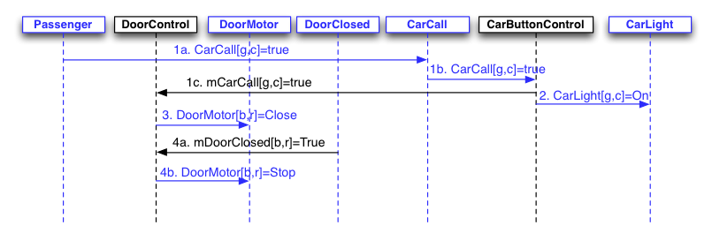
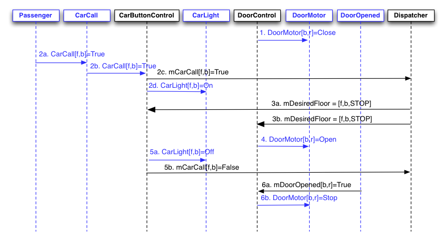
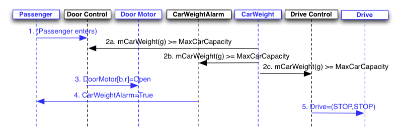
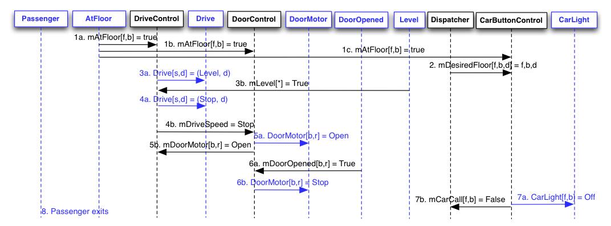
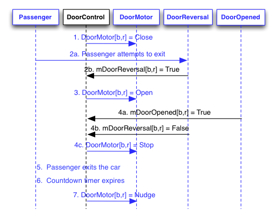
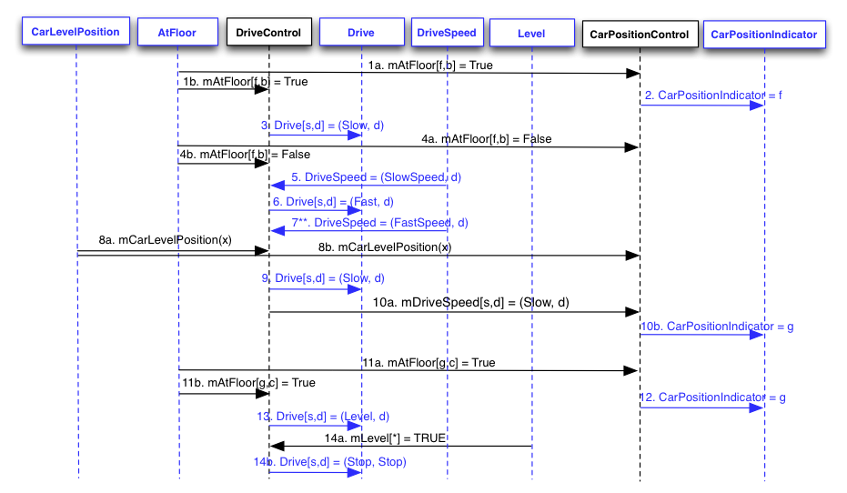
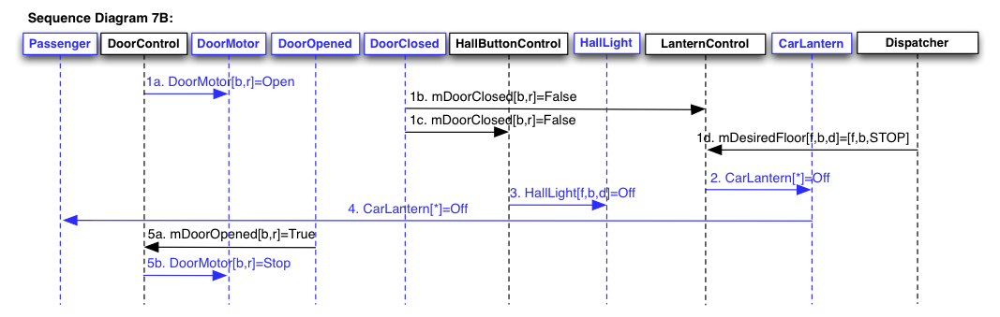
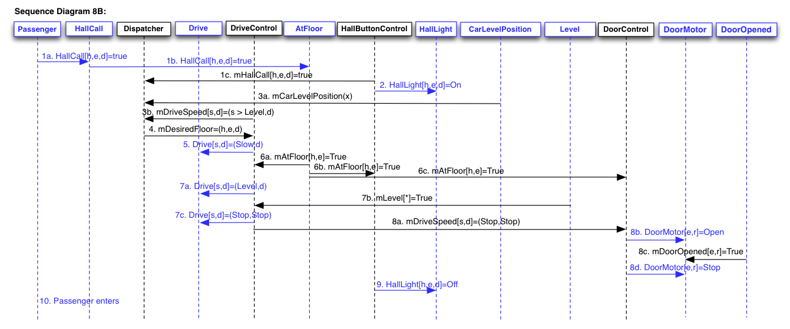
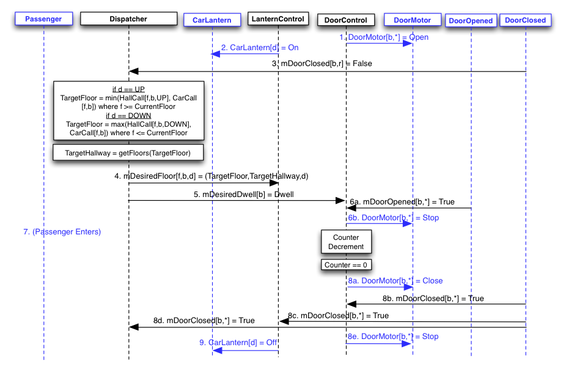
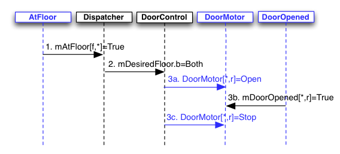

18-649 Scenarios and Sequence Diagrams
18649 Fall 2012 -- Group 17
Jesse Salazar (jessesal)
Collin Buchan (cbuchan)
Jessica Tiu (jtiu)
Rajeev Sharma (rdsharma)
Scenarios:
Use Case 1: Passenger
Makes A Hall Call
Scenario 1A:
Passenger arrives at a hallway while elevator is elsewhere.
Pre-Conditions:
- All doors are closed.
- Passenger has already arrived at a hallway to use the
elevator.
- Car is at another floor.
Scenario:
- Passenger pushes hall call (up or down) button for
passenger's desired direction d.
- Passenger sees that corresponding hall button light turns
on.
Post-Conditions:
- Elevator has not yet arrived at the passenger's floor.
- All doors are closed.
- Hall button light for passenger's desired direction is on.
Sequence Diagram:
Scenario 1B:
Passenger arrives at a hallway when elevator is already there
and the car is traveling in the same direction as desired by
passenger.
Pre-Conditions:
- Car is at same floor as passenger.
- Car is traveling in same direction d as desired by
passenger.
- At least one door[b,r] is open.
- Hall button light [f,b,d] for
passenger's desired direction is off.
Scenario:
- Door[b,r] starts closing.
- Passenger arrives at a hallway [f, b] to use
the elevator, with intent to travel in direction d.
- Passenger presses hall call button before doors are fully
closed, but after doors are too fully closed for passenger to
enter.
- Hall button lights up.
- Dispatcher updates mDesiredFloor to f, b, d (same d
as before).
- Hall button turns off.
- Doors open.
Post-Conditions:
- Elevator is at the passenger's floor.
- Door is open.
- Hall button light for passenger's desired direction is off.
Sequence Diagram:
Scenario 1C:
Passenger arrives at a hallway when elevator is already there
and the car is traveling in opposite direction as desired by
passenger.
Pre-Conditions:
- Car is at same floor f as passenger.
- Car is traveling in opposite direction ~d than
direction d desired by passenger.
- At least one Door[b,r] is open.
- Hall button light for passenger's desired direction is off.
Scenario:
- Door[b,r] starts closing.
- Passenger arrives at a hallway [f,b] to use
the elevator going in direction d.
- Passenger presses hall call button before doors are fully
closed, but after doors are too fully closed for passenger to
enter.
- Hall button lights up.
- Doors complete closing.
Post-Conditions:
- Elevator is at the passenger's floor.
- All doors are closed.
- Hall button light for passenger's desired direction is on.
Sequence Diagram:
Use Case 2: Passenger
Makes A Car Call
Scenario 2A:
Passenger is in the car and elevator is not at the desired
destination floor.
Author name: Jessica Tiu
Pre-Conditions:
- Car is at floor f, with at least one Door[b,r]
open.
- Passenger is in the car and elevator is not at the desired
destination [g,c], where f != g.
Also, b might or might not be equal to c.
- Car call button for the desired destination is not lit.
Scenario:
- Passenger presses the car call button for floor g
and hallway c.
- The car call button for [g,c] lights up.
- Door[b,r] starts closing.
- Doors complete closing.
Post-Conditions:
- Car is at floor f.
- The car light for [g,c] is lit.
- All doors are closed.
Sequence Diagram:

2B: Passenger is in
the car and the elevator has arrived at the passenger's desired
floor, but passenger has not yet exited the car as the doors
begin to close.
Author name: Jessica Tiu
Pre-Conditions:
- Passenger is in the car.
- Elevator has arrived at the desired hallway, but the
passenger has not yet exited the car.
- At least one door[b,r] is open.
Scenario:
- Door[b,r] starts to close.
- The passenger presses the car call button for floor f
and hallway b, where [f,b] are the same
desired hallway as in the pre-conditions and the car call
button for [f,b] lights up.
- Dispatcher calculates that the desired floor is the current
floor, and that the desired hallway is the current hallway.
- The door starts opening.
- The car light turns off and the car call button for [f,b]
stops reporting a call.
- The door finishes opening.
Post-Conditions:
- Passenger is in the car.
- Elevator has arrived at the desired hallway, but the
passenger has not yet exited the car.
- At least one door[b,r] is open.
Sequence Diagram:

Use Case 3: Passenger
Enters Elevator
Scenario 3A:
Passenger is waiting at a hallway for the elevator and has
already pressed the hall call button.
Author name: Jessica Tiu
Pre-Conditions:
- Car is about to arrive at a hallway [f,b] at
which passenger is waiting.
- The hall call button for passenger's desired direction d
has already been pressed
- The elevator is going in direction d.
- Passenger is outside the car.
- All doors are closed.
Scenario:
- The car arrives at floor f.
- The floor, hallway, and direction desired by the Dispatcher
are f, b, and d respectively.
- HallLight[f,b,d] turns off.
- Car is level in the ~d direction, but not level in
the d direction.
- Car levels in the direction of d.
- After reaching a level state, the car stops leveling.
- Door[b,r] starts to open.
- Door[b,r] finishes opening.
- The passenger enters the car.
Post-Conditions:
- The passenger is in the car.
- The car is at floor f.
- At least one Door[b,r] is open.
- The elevator is set in direction d.
Sequence Diagram:
Scenario 3B:
Passenger enters elevator and triggers overweight sensor
Author name: Collin Buchan (cbuchan)
Pre-Conditions:
- Elevator is at floor f, with at least one Door[b,r]
open.
- mCarWeight(g) is less than MaxCarCapacity, but mCarWeight(g)
plus 150 (weight of one passenger) >= MaxCarCapacity
Scenario:
- Passenger enters car.
- mCarWeight exceeds or is equal to MaxCarCapacity.
- Doors are commanded to open.
- CarWeightAlarm sounds.
- Drive is commanded to Stop
Post-Conditions:
- Doors are open.
- Passenger is in car.
- Elevator is at floor f.
- CarWeightAlarm=true.
Sequence Diagram:

Use Case 4: Passenger
Exits Elevator
Scenario 4A: Passenger is in the elevator as it arrives at
the passenger's desired hallway.
Author name: Rajeev Sharma
Pre-Conditions:
- Passenger is inside the car, traveling to desired floor f
and hallway b.
- Car is traveling in direction d
- All doors are closed.
Scenario:
- The car arrives at floor f.
- The floor, hallway, and direction desired by the Dispatcher
are f, b, and d respectively.
- CarLight[f,b] turns off and mCarCall[f,b] is set to false.
- DriveControl sets drive speed to Level and Car
reaches a level state.
- DriveControl sets drive speed to Stop.
- Door[b,r] starts to open.
- Door[b,r] finishes opening.
- The passenger exits the car.
Post-Conditions:
- The passenger is not in the car.
- The car is at floor f.
- At least one Door[b,r] is open.
Sequence Diagram:

Use
Case 5: Passenger Triggers Door Reversal
Scenario 5A:
Passenger attempts to enter the car as the doors begin to close.
Author name: Rajeev Sharma
Pre-Conditions:
- Passenger is outside the car.
- Car is stopped at passenger's floor f and hallway b.
- At least one door[b,r] is open.
Scenario:
- Door[b,r] starts to close.
- The passenger attempts to enter and is nudged by Door[b,r],
triggering the door reversal sensors.
- A door reversal occurs for Door[b,r].
- Door[b,r] finishes opening.
- The passenger enters the car.
- The countdown timer in Door[b,r] expires.
- Door[b,r] begins to nudge closed.
Post-Conditions:
- Passenger is inside the car.
- Car is stopped at passenger's floor f and hallway b.
- At least one door[b,r] is nudging closed.
Sequence Diagram:
Scenario 5B:
Passenger attempts to exit the car as the doors begin to close.
Author name: Rajeev Sharma
Pre-Conditions:
- Passenger is inside the car.
- Car is stopped at passenger's floor f and hallway b.
- At least one door[b,r] is open.
Scenario:
- Door[b,r] starts to close.
- The passenger attempts to exit and is nudged by Door[b,r],
triggering
the door reversal sensors.
- A door reversal occurs for Door[b,r].
- Door[b,r] finishes opening.
- The passenger exits the car.
- The countdown timer in Door[b,r] expires.
- Door[b,r] begins to nudge closed.
Post-Conditions:
Passenger is no longer inside the car.
Car is stopped at floor f and hallway b.
At least one door[b,r] is nudging closed.
Sequence Diagram:

Use Case 6: Determine
Car Position
Scenario 6A: Car moves from hallway f on floor x to adjacent
hallway g on floor y and stops.
Note: Recall that the Drive of the elevator we provided
is never commanded to go Fast, so the elevator only moves Slow
and can therefore stop right away when it sees the appropriate
AtFloor[f, b](True). Your solution will probably involve the
Drive going Fast for some portion of the trip, and the
CarLevelPosition Sensor to plan when to slow down. You will be
given information on how to design a Fast Drive in the upcoming
projects. For Project 2, a Slow Drive will suffice.
Author name: Jesse Salazar (jessesal)
Pre-Conditions:
- Car is at hallway [x, f].
- All elevator doors are closed.
Scenario:
- mAtFloor[x,f] is set to True
- CarPositionControl indicates a car position at floor x.
- Car begins moving towards floor y at speed Slow.
- AtFloor[x,f] is set to False as it passes hallway
[x,f].
- Drive begins accelerating to Fast speed.
- Drive reaches FastSpeed (** may not ever reach MaxSpeed
before needing to slow down **).
- CarPositionControl notifies DriveControl of the commit point
for floor y by updating CarPositionIndicator to y.
- DriveControl decelerates by commanding Drive to Slow.
- Car reaches floor y and mAtFloor[y,g] is set
to True.
- Car levels to prepare for stop.
- Car stops.
Post-Conditions:
Sequence Diagram:

Use Case 7: Determine
Car Direction
Scenario 7A:
Elevator opens doors when Dispatcher's intended direction is Up
or Down.
Author name: Collin Buchan (cbuchan)
Pre-Conditions:
- Elevator is stopped at floor f, and AtFloor[f,b]
was last received as True.
- Dispatcher intends direction d and is enabling
pickup in hallway b.
- All doors are closed.
- Both Car Lanterns are off.
Scenario:
- Door[b,r] starts opening.
- CarLantern for direction d lights up.
- HallLight[f,b,d] turns off.
- Passenger arrives at hallway [f,b] and observes the
direction of car is d.
- Doors finish opening.
Post-Conditions:
- Elevator is at passenger's floor.
- Door[b,r] is open.
- CarLantern[d] is on.
- HallLight[f,b,d] is off.
Sequence Diagram:

Scenario 7B:
Elevator arrives at a hallway and the desired direction is Stop.
Author name: Collin Buchan (cbuchan)
Pre-Conditions:
- Elevator is stopped at floor f, and AtFloor[f,b]
was last received as True.
- Dispatcher intends direction Stop (i.e., no selected
direction), with enabled pickup in hallway b.
- All doors are closed.
- Both Car Lanterns are off.
Scenario:
- Door[b,*] starts opening.
- CarLanterns are commanded to be off.
- Hall button light [f,b,d] turns off.
- Passenger arrives at hallway [f,b] and observes that
the car has no intended direction.
- Doors finish opening.
Post-Conditions:
- Elevator is at passenger's floor.
- Door[b,*] is open.
- Both Car Lanterns are off.
- HallLight[f,b,d] is off.
Sequence Diagram:

Scenario 7C:
Elevator doors close on a hallway.
Author name: Collin Buchan (cbuchan)
Pre-Conditions:
- At least one Door[b,r] is open.
Scenario:
- Door[b,r] starts to close.
- Doors finish closing.
- Door motor is commanded to Stop.
- The car lanterns turn off.
Post-Conditions:
- Doors are closed.
- The car lanterns are off.
Sequence Diagram:

Use Case 8: Move Car to
Next Floor
Scenario 8A: Elevator moves from
{floor f, hallway b} to {floor g, hallway c} in direction d.
Author name: Jesse Salazar (jessesal)
Note: You will want to create other scenarios that involve
fast speed for your elevator, but this is a starting point.
Pre-Conditions:
- Elevator is at floor f, with at least one Door[b,r]
open.
- Drive is stopped.
Scenario:
- Door[b,r] starts to close.
- Doors finish closing.
- Car begins moving toward hallway[g,c].
- AtFloor[g,c] is set to TRUE.
- Car stops at hallway[g,c].
Post-Conditions:
- Doors are closed.
- Car is stopped at hallway[g,c]
Sequence Diagram:

Scenario 8B: Elevator is moving
from {floor f, hallway b} to {floor g, hallway c} in direction d
when it receives a serviceable hall call for {floor h, hallway
e} in between floor f and floor g.
Author name: Jessica Tiu
Pre-Conditions:
- mAtFloor[f, b] was last received as true, and mDesiredFloor
= (g, c).
- All doors are closed.
- Drive is moving at a non-leveling speed.
Scenario:
- A passenger arrives at floor h, hallway e and presses the
hall call button for direction d.
- The hall call button for h,e lights up.
- CarPositionControl calculates the commit point for (h,e) and
determines that the car is able to stop in time to service the
hall call.
- The Dispatcher revises mDesiredFloor to be (h,e,d).
- Drive begins decelerating to Slow speed.
- The car reaches floor (h,e). AtFloor[h,e] is set to
TRUE.
- The hall call button for h,e turns off.
- DriveControl levels the car.
- The doors open.
- The passenger enters the car.
Post-Conditions:
- Doors are open.
- Car is stopped at hallway[h,e]
Sequence Diagram:

Use Case 9: Cycle Doors
Scenario 9A: Elevator
stops at hallway and doors open. Dispatcher computes next
desired floor just as doors open. Doors close.
Author name: Jesse Salazar (jessesal)
Note: This dispatcher is really dumb and stops at every floor,
in order. It would be much better to stop only at floors with
people on them or that people want to go to.
Pre-Conditions:
- Car is stopped.
- AtFloor[f,b] was last received as True.
- All doors are closed.
Scenario:
- Door[b,*] starts to open.
- Dispatcher computes next desired floor.
- Dispatcher computes desired dwell.
- CarLantern[d] turns on after new direction is computed.
- Door[b,*] finishes opening.
- Passenger arrives and enters car.
- Passenger realizes that his/her desired floor is already
selected.
- Doors[b,*] close after countdown expires.
Post-Conditions:
- Doors are closed
- Passenger is in car.
- DoorControl has been notified of desired floor
Sequence Diagram:

Scenario 9B: Elevator
is between floors and the doors attempt to open.
Author name: Rajeev Sharma (rdsharma)
Pre-Conditions:
- Elevator is between floors (all mAtFloor[f, b] are False)
Scenario:
- Any mDoorClosed [b, r] is False
- mDesiredFloor updated to [1, None, d]
- Doors are commanded to open.
- Drive is set to Stop.
- Emergency brake is activated.
- Drive is set to Stop.
Post-Conditions:
- mDesiredFloor set
- Drive is set to Stop
Sequence Diagram:
Scenario 9C:
Elevator arrives at a floor with doors on both sides
Author name: Rajeev Sharma (rdsharma)
Pre-Conditions:
- Elevator approaching floor f, with doors closed.
Scenario:
- Elevator arrives at floor f.
- Dispatcher notifies DoorControl that Both doors should be
opened.
- Both doors open.
Post-Conditions:
- Both doors are open.
- Elevator is at floor f.
Sequence Diagram:

{kind=link}
{kind=link}
{kind=link}
{kind=link}
{kind=link}
{kind=link}
{kind=link}
{kind=link}
{kind=link}
{kind=link}
{kind=link}